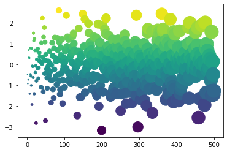

---
redirect_from:
  - "/features/interactive-cells"
interact_link: content/features/interactive_cells.ipynb
kernel_name: python3
has_widgets: true
title: |-
  Interactive code in your book
pagenum: 18
prev_page:
  url: /features/beta.html
next_page:
  url: /features/math.html
suffix: .ipynb
search: code cell thebelab button interactive page kernel widgets book binder run jupyter show interact display cells provide running configuration true example below any youd experimental same above tag output widget sometimes both interactivity mybinder making readers called com top right add pages following yaml configure settings used fields binderhub buttons described initialize uses user order using tags adding made initialization variable hidden tell nbinteract metadata clicking rather let directly instead sending off jupyterhub currently few ways happen describes bring tools org remote inputs content without leave site project github minrk provides clicked convert into edited also adds connects cloud alternative

comment: "***PROGRAMMATICALLY GENERATED, DO NOT EDIT. SEE ORIGINAL FILES IN /content***"
---

    <main class="jupyter-page">
    <div id="page-info"><div id="page-title">Interactive code in your book</div>
</div>
    <div class="jb_cell">

<div class="cell border-box-sizing text_cell rendered"><div class="inner_cell">
<div class="text_cell_render border-box-sizing rendered_html">
<p>Sometimes you'd rather let people interact with code <em>directly on the page</em>
instead of sending them off to a Binder or a JupyterHub. There are currently
a few ways to make this happen in Jupyter Book (both of which are experimental).</p>
<p>This page describes how to bring interactivity to your book. Both of these
tools use <a href="https://mybinder.org"><strong>MyBinder</strong></a> to provide a remote kernel.</p>
<h2 id="Making-your-page-inputs-interactive">Making your page inputs interactive<a class="anchor-link" href="#Making-your-page-inputs-interactive"> </a></h2><p>✨<strong>experimental</strong>✨</p>
<p>If you'd like to provide interactivity for your content without making your readers
leave the Jupyter Book site, you can use a project called <a href="https://github.com/minrk/thebelab">Thebelab</a>.</p>
<p>This provides you a button that, when clicked, will convert each code cell into
an <strong>interactive</strong> cell that can be edited. It also adds a "run" button to each cell,
and connects to a Binder kernel running in the cloud.
As an alternative to pressing the Thebelab button at the top of the page, you 
can press the  symbol in the top right corner of each code cell to start the 
interactive mode.</p>
<p>To add a Thebelab button to your Jupyter Book pages, use the following configuration:</p>
<div class="highlight"><pre><span></span><span class="nt">use_thebelab_button              </span><span class="p">:</span> <span class="l l-Scalar l-Scalar-Plain">true</span>  <span class="c1"># If &#39;true&#39;, display a button to allow in-page running code cells with Thebelab</span>
</pre></div>
<p>In addition, you can configure the Binder settings that are used to provide a kernel for
Thebelab to run the code. These use the same configuration fields as the BinderHub interact
buttons described above.</p>
<p>For an example, click the <strong>Thebelab</strong> button above on this page, and run the code below.</p>

</div>
</div>
</div>
</div>

<div class="jb_cell">

<div class="cell border-box-sizing code_cell rendered">
<div class="input">

<div class="inner_cell">
    <div class="input_area">
<div class=" highlight hl-ipython3"><pre><span></span><span class="kn">import</span> <span class="nn">numpy</span> <span class="k">as</span> <span class="nn">np</span>
<span class="kn">import</span> <span class="nn">matplotlib.pyplot</span> <span class="k">as</span> <span class="nn">plt</span>
<span class="n">plt</span><span class="o">.</span><span class="n">ion</span><span class="p">()</span>

<span class="n">x</span> <span class="o">=</span> <span class="n">np</span><span class="o">.</span><span class="n">arange</span><span class="p">(</span><span class="mi">500</span><span class="p">)</span>
<span class="n">y</span> <span class="o">=</span> <span class="n">np</span><span class="o">.</span><span class="n">random</span><span class="o">.</span><span class="n">randn</span><span class="p">(</span><span class="mi">500</span><span class="p">)</span>

<span class="n">fig</span><span class="p">,</span> <span class="n">ax</span> <span class="o">=</span> <span class="n">plt</span><span class="o">.</span><span class="n">subplots</span><span class="p">()</span>
<span class="n">ax</span><span class="o">.</span><span class="n">scatter</span><span class="p">(</span><span class="n">x</span><span class="p">,</span> <span class="n">y</span><span class="p">,</span> <span class="n">c</span><span class="o">=</span><span class="n">y</span><span class="p">,</span> <span class="n">s</span><span class="o">=</span><span class="n">x</span><span class="p">)</span>
</pre></div>

    </div>
</div>
</div>

<div class="output_wrapper">
<div class="output">

<div class="jb_output_wrapper }}">
<div class="output_area">


<div class="output_text output_subarea output_execute_result">
<pre>&lt;matplotlib.collections.PathCollection at 0x11b0045f8&gt;</pre>
</div>

</div>
</div>
</div>
</div>

</div>
</div>

<div class="jb_cell">

<div class="cell border-box-sizing text_cell rendered"><div class="inner_cell">
<div class="text_cell_render border-box-sizing rendered_html">
<h3 id="Running-cells-in-Thebelab-when-it-is-initialized">Running cells in Thebelab when it is initialized<a class="anchor-link" href="#Running-cells-in-Thebelab-when-it-is-initialized"> </a></h3><p>Sometimes you'd like to initialize the kernel that Thebelab uses by running
some code ahead of time. This might be code that you then hide from the user
in order to narrow the focus of what they interact with. This is possible
by using Jupyter Notebook tags.</p>
<p>Adding the tag <code>thebelab-init</code> to any code cell will cause Thebelab to
run this cell after it has received a kernel. Any subsequent Thebelab cells
will have access to the same environment (e.g. any module imports made in the
initialization cell).</p>
<p>You can then pair this with something like <code>hide_input</code> in order to run
initialization code that your user doesn't immediately see. For example,
below we'll initialize a variable in a hidden cell, and then tell another
cell to print the output of that variable.</p>

</div>
</div>
</div>
</div>

<div class="jb_cell tag_thebelab-init tag_hide_input">

<div class="cell border-box-sizing code_cell rendered tag_thebelab-init tag_hide_input">
<div class="input">

<div class="inner_cell">
    <div class="input_area">
<div class=" highlight hl-ipython3"><pre><span></span><span class="n">my_hidden_variable</span> <span class="o">=</span> <span class="s1">&#39;wow, it worked!&#39;</span>
</pre></div>

    </div>
</div>
</div>

</div>
</div>

<div class="jb_cell">

<div class="cell border-box-sizing code_cell rendered">
<div class="input">

<div class="inner_cell">
    <div class="input_area">
<div class=" highlight hl-ipython3"><pre><span></span><span class="c1"># The variable for this is defined in the cell above!</span>
<span class="nb">print</span><span class="p">(</span><span class="n">my_hidden_variable</span><span class="p">)</span>
</pre></div>

    </div>
</div>
</div>

<div class="output_wrapper">
<div class="output">

<div class="jb_output_wrapper }}">
<div class="output_area">

<div class="output_subarea output_stream output_stdout output_text">
<pre>wow, it worked!
</pre>
</div>
</div>
</div>
</div>
</div>

</div>
</div>

<div class="jb_cell">

<div class="cell border-box-sizing text_cell rendered"><div class="inner_cell">
<div class="text_cell_render border-box-sizing rendered_html">
<h2 id="Using-interactive-widgets-on-your-page">Using interactive widgets on your page<a class="anchor-link" href="#Using-interactive-widgets-on-your-page"> </a></h2><p>✨<strong>experimental</strong>✨</p>
<p><a href="https://www.nbinteract.com"><strong>nbinteract</strong></a> is a tool for displaying interactive widgets in your
static HTML page. It uses a Binder kernel to power the widgets, and displays output that your
readers can interact with. For example, below we will show a simple matplotlib plot that can be made
interactive with <strong>ipywidgets</strong></p>
<p>To add a <strong>Show Widgets</strong> button to your Jupyter Book pages, use the following configuration:</p>
<div class="highlight"><pre><span></span><span class="nt">use_show_widgets_button         </span><span class="p">:</span> <span class="l l-Scalar l-Scalar-Plain">true</span>  <span class="c1"># If &#39;true&#39;, display a button to show widgets backed by a Binder kernel</span>
</pre></div>
<p>Then, tell Jupyter Book that you want a cell to display a widget by <strong>adding a tag</strong> to the cell's
metadata called <code>interactive</code>. When a reader clicks on the "show widgets" button, any cells
with this tag will be run on Binder, and have their output widgets displayed underneath the cell.</p>
<p>Here's an example of cell metadata that would trigger this behavior:</p>
<div class="highlight"><pre><span></span><span class="p">{</span>
    <span class="nt">&quot;tags&quot;</span><span class="p">:</span> <span class="p">[</span>
        <span class="s2">&quot;interactive&quot;</span><span class="p">,</span>
    <span class="p">]</span>
<span class="p">}</span>
</pre></div>
<p>You can configure the Binder settings that are used to provide a kernel to run the code.
These use the same configuration fields as the BinderHub interact buttons described above.</p>
<p>Clicking on "show widgets" should display a widget below. We've hidden the code cell that
generates the widget by default (though you can always show it by clicking the button to
the right!</p>

</div>
</div>
</div>
</div>

<div class="jb_cell tag_hide_input tag_interactive">

<div class="cell border-box-sizing code_cell rendered tag_hide_input tag_interactive">
<div class="input">

<div class="inner_cell">
    <div class="input_area">
<div class=" highlight hl-ipython3"><pre><span></span><span class="kn">from</span> <span class="nn">ipywidgets</span> <span class="k">import</span> <span class="n">interact</span><span class="p">,</span> <span class="n">FloatSlider</span>
<span class="kn">import</span> <span class="nn">numpy</span> <span class="k">as</span> <span class="nn">np</span>
<span class="kn">import</span> <span class="nn">matplotlib.pyplot</span> <span class="k">as</span> <span class="nn">plt</span>
<span class="kn">from</span> <span class="nn">IPython.display</span> <span class="k">import</span> <span class="n">display</span><span class="p">,</span> <span class="n">HTML</span>
<span class="n">plt</span><span class="o">.</span><span class="n">ion</span><span class="p">()</span>

<span class="n">x</span> <span class="o">=</span> <span class="n">np</span><span class="o">.</span><span class="n">arange</span><span class="p">(</span><span class="mi">500</span><span class="p">)</span>
<span class="n">y</span> <span class="o">=</span> <span class="n">np</span><span class="o">.</span><span class="n">random</span><span class="o">.</span><span class="n">randn</span><span class="p">(</span><span class="mi">500</span><span class="p">)</span>

<span class="k">def</span> <span class="nf">update_plot_size</span><span class="p">(</span><span class="n">s</span><span class="p">,</span> <span class="n">cmap</span><span class="p">):</span>
    <span class="k">if</span> <span class="n">cmap</span> <span class="o">==</span> <span class="s2">&quot;jet&quot;</span><span class="p">:</span>
        <span class="n">display</span><span class="p">(</span><span class="n">HTML</span><span class="p">(</span><span class="s2">&quot;&lt;h2 style=&#39;color: red; margin: 0px auto;&#39;&gt;Nope&lt;/h2&gt;&quot;</span><span class="p">))</span>
        <span class="k">return</span>
    <span class="n">fig</span><span class="p">,</span> <span class="n">ax</span> <span class="o">=</span> <span class="n">plt</span><span class="o">.</span><span class="n">subplots</span><span class="p">()</span>
    <span class="n">ax</span><span class="o">.</span><span class="n">scatter</span><span class="p">(</span><span class="n">x</span><span class="p">,</span> <span class="n">y</span><span class="p">,</span> <span class="n">c</span><span class="o">=</span><span class="n">y</span><span class="p">,</span> <span class="n">s</span><span class="o">=</span><span class="n">x</span><span class="o">*</span><span class="n">s</span><span class="p">,</span> <span class="n">cmap</span><span class="o">=</span><span class="n">cmap</span><span class="p">)</span>

<span class="n">interact</span><span class="p">(</span><span class="n">update_plot_size</span><span class="p">,</span> <span class="n">s</span><span class="o">=</span><span class="n">FloatSlider</span><span class="p">(</span><span class="n">value</span><span class="o">=</span><span class="mi">1</span><span class="p">,</span> <span class="nb">min</span><span class="o">=.</span><span class="mi">1</span><span class="p">,</span> <span class="nb">max</span><span class="o">=</span><span class="mi">2</span><span class="p">,</span> <span class="n">step</span><span class="o">=.</span><span class="mi">1</span><span class="p">),</span> <span class="n">cmap</span><span class="o">=</span><span class="p">[</span><span class="s1">&#39;viridis&#39;</span><span class="p">,</span> <span class="s1">&#39;magma&#39;</span><span class="p">,</span> <span class="s1">&#39;jet&#39;</span><span class="p">]);</span>
</pre></div>

    </div>
</div>
</div>

<div class="output_wrapper">
<div class="output">

<div class="jb_output_wrapper output_widget_view  }}">
<div class="output_area">


<div class="output_png output_subarea ">

</div>

</div>
</div>
</div>
</div>

</div>
</div>

 

<script type="application/vnd.jupyter.widget-state+json">
{"state": {"6ed9729c162e4274afbc8869e1a27c0c": {"model_name": "LayoutModel", "model_module": "@jupyter-widgets/base", "model_module_version": "1.2.0", "state": {"_model_module": "@jupyter-widgets/base", "_model_module_version": "1.2.0", "_model_name": "LayoutModel", "_view_count": null, "_view_module": "@jupyter-widgets/base", "_view_module_version": "1.2.0", "_view_name": "LayoutView", "align_content": null, "align_items": null, "align_self": null, "border": null, "bottom": null, "display": null, "flex": null, "flex_flow": null, "grid_area": null, "grid_auto_columns": null, "grid_auto_flow": null, "grid_auto_rows": null, "grid_column": null, "grid_gap": null, "grid_row": null, "grid_template_areas": null, "grid_template_columns": null, "grid_template_rows": null, "height": null, "justify_content": null, "justify_items": null, "left": null, "margin": null, "max_height": null, "max_width": null, "min_height": null, "min_width": null, "object_fit": null, "object_position": null, "order": null, "overflow": null, "overflow_x": null, "overflow_y": null, "padding": null, "right": null, "top": null, "visibility": null, "width": null}}, "c8728e5a70ec4cf680163bc8e839a9c9": {"model_name": "SliderStyleModel", "model_module": "@jupyter-widgets/controls", "model_module_version": "1.5.0", "state": {"_model_module": "@jupyter-widgets/controls", "_model_module_version": "1.5.0", "_model_name": "SliderStyleModel", "_view_count": null, "_view_module": "@jupyter-widgets/base", "_view_module_version": "1.2.0", "_view_name": "StyleView", "description_width": "", "handle_color": null}}, "49a75e39973a4f7eb4f3737b055b874c": {"model_name": "FloatSliderModel", "model_module": "@jupyter-widgets/controls", "model_module_version": "1.5.0", "state": {"_dom_classes": [], "_model_module": "@jupyter-widgets/controls", "_model_module_version": "1.5.0", "_model_name": "FloatSliderModel", "_view_count": null, "_view_module": "@jupyter-widgets/controls", "_view_module_version": "1.5.0", "_view_name": "FloatSliderView", "continuous_update": true, "description": "s", "description_tooltip": null, "disabled": false, "layout": "IPY_MODEL_6ed9729c162e4274afbc8869e1a27c0c", "max": 2.0, "min": 0.1, "orientation": "horizontal", "readout": true, "readout_format": ".2f", "step": 0.1, "style": "IPY_MODEL_c8728e5a70ec4cf680163bc8e839a9c9", "value": 1.0}}, "2e630fac44af404d9eeda39d9f89d8f3": {"model_name": "LayoutModel", "model_module": "@jupyter-widgets/base", "model_module_version": "1.2.0", "state": {"_model_module": "@jupyter-widgets/base", "_model_module_version": "1.2.0", "_model_name": "LayoutModel", "_view_count": null, "_view_module": "@jupyter-widgets/base", "_view_module_version": "1.2.0", "_view_name": "LayoutView", "align_content": null, "align_items": null, "align_self": null, "border": null, "bottom": null, "display": null, "flex": null, "flex_flow": null, "grid_area": null, "grid_auto_columns": null, "grid_auto_flow": null, "grid_auto_rows": null, "grid_column": null, "grid_gap": null, "grid_row": null, "grid_template_areas": null, "grid_template_columns": null, "grid_template_rows": null, "height": null, "justify_content": null, "justify_items": null, "left": null, "margin": null, "max_height": null, "max_width": null, "min_height": null, "min_width": null, "object_fit": null, "object_position": null, "order": null, "overflow": null, "overflow_x": null, "overflow_y": null, "padding": null, "right": null, "top": null, "visibility": null, "width": null}}, "57e2b17bb0854b9cb6a737981c96a1d8": {"model_name": "VBoxModel", "model_module": "@jupyter-widgets/controls", "model_module_version": "1.5.0", "state": {"_dom_classes": ["widget-interact"], "_model_module": "@jupyter-widgets/controls", "_model_module_version": "1.5.0", "_model_name": "VBoxModel", "_view_count": null, "_view_module": "@jupyter-widgets/controls", "_view_module_version": "1.5.0", "_view_name": "VBoxView", "box_style": "", "children": ["IPY_MODEL_49a75e39973a4f7eb4f3737b055b874c", "IPY_MODEL_6049785a71d041298097547849ae295a", "IPY_MODEL_35d0d49aa17740faa5c3fe45486a9d56"], "layout": "IPY_MODEL_2e630fac44af404d9eeda39d9f89d8f3"}}, "44692aa00c8f4ec4b20386124c87d890": {"model_name": "LayoutModel", "model_module": "@jupyter-widgets/base", "model_module_version": "1.2.0", "state": {"_model_module": "@jupyter-widgets/base", "_model_module_version": "1.2.0", "_model_name": "LayoutModel", "_view_count": null, "_view_module": "@jupyter-widgets/base", "_view_module_version": "1.2.0", "_view_name": "LayoutView", "align_content": null, "align_items": null, "align_self": null, "border": null, "bottom": null, "display": null, "flex": null, "flex_flow": null, "grid_area": null, "grid_auto_columns": null, "grid_auto_flow": null, "grid_auto_rows": null, "grid_column": null, "grid_gap": null, "grid_row": null, "grid_template_areas": null, "grid_template_columns": null, "grid_template_rows": null, "height": null, "justify_content": null, "justify_items": null, "left": null, "margin": null, "max_height": null, "max_width": null, "min_height": null, "min_width": null, "object_fit": null, "object_position": null, "order": null, "overflow": null, "overflow_x": null, "overflow_y": null, "padding": null, "right": null, "top": null, "visibility": null, "width": null}}, "43e808e9d5f341a4aa77eec55f045f4c": {"model_name": "DescriptionStyleModel", "model_module": "@jupyter-widgets/controls", "model_module_version": "1.5.0", "state": {"_model_module": "@jupyter-widgets/controls", "_model_module_version": "1.5.0", "_model_name": "DescriptionStyleModel", "_view_count": null, "_view_module": "@jupyter-widgets/base", "_view_module_version": "1.2.0", "_view_name": "StyleView", "description_width": ""}}, "6049785a71d041298097547849ae295a": {"model_name": "DropdownModel", "model_module": "@jupyter-widgets/controls", "model_module_version": "1.5.0", "state": {"_dom_classes": [], "_model_module": "@jupyter-widgets/controls", "_model_module_version": "1.5.0", "_model_name": "DropdownModel", "_options_labels": ["viridis", "magma", "jet"], "_view_count": null, "_view_module": "@jupyter-widgets/controls", "_view_module_version": "1.5.0", "_view_name": "DropdownView", "description": "cmap", "description_tooltip": null, "disabled": false, "index": 0, "layout": "IPY_MODEL_44692aa00c8f4ec4b20386124c87d890", "style": "IPY_MODEL_43e808e9d5f341a4aa77eec55f045f4c"}}, "a137c798f1b945e9a4f121400a85869e": {"model_name": "LayoutModel", "model_module": "@jupyter-widgets/base", "model_module_version": "1.2.0", "state": {"_model_module": "@jupyter-widgets/base", "_model_module_version": "1.2.0", "_model_name": "LayoutModel", "_view_count": null, "_view_module": "@jupyter-widgets/base", "_view_module_version": "1.2.0", "_view_name": "LayoutView", "align_content": null, "align_items": null, "align_self": null, "border": null, "bottom": null, "display": null, "flex": null, "flex_flow": null, "grid_area": null, "grid_auto_columns": null, "grid_auto_flow": null, "grid_auto_rows": null, "grid_column": null, "grid_gap": null, "grid_row": null, "grid_template_areas": null, "grid_template_columns": null, "grid_template_rows": null, "height": null, "justify_content": null, "justify_items": null, "left": null, "margin": null, "max_height": null, "max_width": null, "min_height": null, "min_width": null, "object_fit": null, "object_position": null, "order": null, "overflow": null, "overflow_x": null, "overflow_y": null, "padding": null, "right": null, "top": null, "visibility": null, "width": null}}, "35d0d49aa17740faa5c3fe45486a9d56": {"model_name": "OutputModel", "model_module": "@jupyter-widgets/output", "model_module_version": "1.0.0", "state": {"_dom_classes": [], "_model_module": "@jupyter-widgets/output", "_model_module_version": "1.0.0", "_model_name": "OutputModel", "_view_count": null, "_view_module": "@jupyter-widgets/output", "_view_module_version": "1.0.0", "_view_name": "OutputView", "layout": "IPY_MODEL_a137c798f1b945e9a4f121400a85869e", "msg_id": "", "outputs": []}}}, "version_major": 2, "version_minor": 0}
</script>


    </main>
    